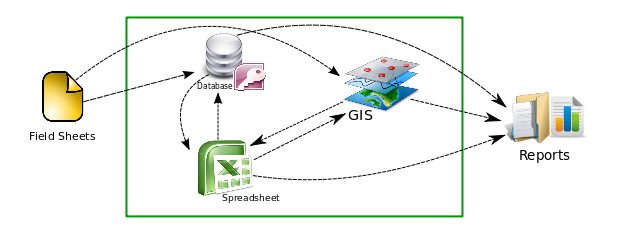

Historia: gvSIG Fonsagua
Cómo era procesada la información antes de gvSIG Fonsagua
Dentro del programa de Cooperación Internacional, los técnicos tienen que gestionar diversas fuentes de datos y analizarlos para generar alternativas en proyectos de Agua y Saneamiento. Antes del desarrollo de gvSIG Fonsagua, esos procesos se hacían mediante el uso de diferentes herramientas de un modo completamente manual. Algunas de las herramientas utilizadas eran:
- Base de datos de Microsoft Access: para introducir y almacenar información alfanumérica.
- ArcGIS: para introducir y analizar información geográfica.
- Microsoft Excel: para analizar la información recopilada por las dos aplicaciones anteriores.
La figura a continuación muestra los flujos de información entre las aplicaciones:
Cómo gvSIG Fonsagua ayudó a mejorar el proceso
La aplicación gvSIG Fonsagua ha integrado en una única herramienta las herramientas necesarias para que los técnicos recopilen, analicen y obtengan información en el contexto de los programas de Agua y Saneamiento.
Tener la información centralizada y automatizar algunos procesos tiene grandes ventajas, tales como:
- Facilitar todo el proceso a los técnicos.
- Toda la información está georreferenciada, lo que les permite crear más y mejores análisis.
- Minimizar posibles errores humanos en el proceso de reutilización de la información.
La siguiente imagen muestra las funcionalidades que los usuarios pueden hacer usando gvSIG Fonsagua:

En la tabla siguiente es posible ver cómo ha mejorado los procesos el uso de gvSIG Fonsagua:
Antes de gvSIG Fonsagua |
Despues de gvSIG Fonsagua |
|
| Introducción de la información | Parte de la información recopilada era almacenada en la Base de Datos Access y el resto de la información se almacenaba por separado en ShapeFiles a través del software ArcGIS. | Toda la información se almacena en una única herramienta. |
| Generación propuestas | Mediante el uso de un programa de hojas de cálculo, los técnicos tomaban los datos de la base de datos y del Sistema de Información Geográfica de manera manual. Parte de la información generada por el plan seleccionado se guardaba en la base de datos y otra en el SIG. | El usuario accede a la información guardada anteriormente de forma transparente y automática y los resultados se guardan automáticamente en la base de datos. |
| Generación de informes | Los informes se realizaban de forma automatizada desde la base de datos, incluidos algunos mapas de manera automática. | Sin mejoras significativas. |